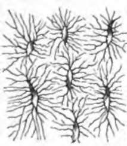
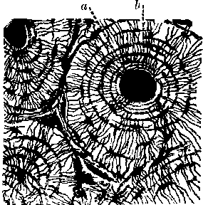
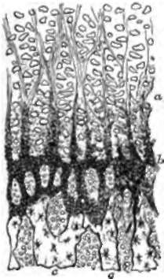

22. Bone
Description
This section is from the book "Animal Physiology: The Structure And Functions Of The Human Body", by John Cleland. Also available from Amazon: Animal Physiology, the Structure and Functions of the Human Body.
22. Bone
Bone is a more complex tissue than cartilage; its complexity depending on the impermeability of its matrix to fluids, and the consequent necessity of canals for nutrition. The matrix consists two-thirds of mineral matter, principally phosphate of lime with some carbonate of lime, and the remaining third of animal matter; the two being so intimately blended that they form a homogeneous mass, translucent in thin sections. When the animal matter is removed by calcination the form of the bone still remains; and when the mineral matter has been gradually dissolved by dilute hydrochloric acid, the animal matter retains the same bulk and microscopic structure as before, presenting the consistence and flexibility of cartilage, but yielding gelatin by boiling.
The only microscopic structures common to all bone are the bone-corpuscles, which are nucleated corpuscles characterized by a multitude of fine processes, and are imbedded in hollows of corresponding shape and size, called lacunæ; while their processes occupy exceedingly fine canaliculi, which radiate from the lacunæ, those of one lacuna inosculating with those of others, so that fluids may be conveyed from one lacuna to another.
Bony tissue is found, however, in two different forms, the cancellated and the compact. Cancellated or spongy tissue, such as one finds in the bodies of the vertebræ, the tarsal bones, and the ends of long bones, consists of minute spicules and occasional laminæ of bone with the spaces or meshes between them filled with fine connective tissue, copiously supplied with blood-vessels, and loaded more or less with adipose matter. Compact or solid bony tissue, such as is found in the shafts of the long bones, is traversed by bloodvessels, and presents a remarkable microscopic arrangement connected therewith. The passages for the blood-vessels, named Haversian canals, after Havers, who first mentioned them, vary from 1/1000 to 1/200 of an inch in diameter; they enter from the surface of the bone by multitudes of minute oblique openings visible with the naked eye, and run for the most part longitudinally, connected however by numerous short canals, which have a more transverse direction. The tissue is arranged in concentric laminæ around the Haversian canals, so that circles of lacunæ are seen surrounding the transverse, sections of the canals, and such an arrangement of concentric rings is called an Haversian system. The whole compact tissue is made up of such systems, the interstices being filled with fragments of similar lamina which were formerly complete, but of which the other portions have been absorbed so as to leave gaps or absorption-spaces, subsequently filled up by new systems developed concentrically from the circumference inwards, till they have closely grasped the blood-vessels in the centre.
Fig. 22. Lacune and Canalicull.
Fig. 23. Transverse Section of Compact osseous Tissue, a. Haversian canal; b, lacunæ in concentric rings.
The arteries for the supply of bone subdivide in the fibrous membrane by which each bone is surrounded, the periosteum, and from this membrane small branches pass all over the surface into the openings of the Haversian canals. The veins emerge by comparatively few orifices of larger size, which, in long bones, are found near the articular extremities. The marrow cavities in the shafts of long bones may be looked on as of the same description as the cancellations in the spongy tissue at the extremities of the same bones, with which they communicate. The marrow is vascular connective tissue of a delicate description, loaded with adipose cells, and has usually a special artery, the so-called nutrient artery, which pierces the bone, and supplies both the marrow and the innermost part of the osseous tissue.
Fig. 24. Vertical Section through the plane of ossification at the upper end of the femur of an infant, a, Cartilage, with corpuscles in vertical columns, and altered matrix between; b, granular deposit spreading in spicules; c, true bone.
23. Bone is formed, as has been stated, either from cartilage or fibrous tissue. All bones of considerable thickness are originally cartilaginous, and their ossification begins in the centre of the mass. The first step preliminary to this process of ossification is the multiplication of vessels within canals, and the absorption before them of a certain amount of cartilaginous matrix. When a section is made through the plane of contact of a centre of ossification and the surrounding cartilage, the cartilage-corpuscles are seen arranged in rows placed vertically to the plane of ossification; and between these rows there project into the matrix opaque spicules, which consist of granules of calcified matter, distinct one from another, and reflecting the light. By a further deposition of granules, the cartilage-corpuscles become hid from view and closely surrounded; and in some instances mineral deposit takes place also within the capsules. By still further deposition of mineral matter, the matrix becomes homogeneous and transparent, and within the ossifying border spaces are formed by absorption. Within these spaces there is a free growth of corpuscles (termed osteoblastic) and bloodvessels. Whether the corpuscles are derived from those of the cartilage, or from the connective tissue round the vessels, is not settled; but they become imbedded in a new deposition of calcified matrix, which leaves them with freely intercommunicating branches, and are thus converted into true bone-corpuscles.
The first deposit of bone is dense and irregular: if the spaces formed in this by absorption accumulate, cancellated tissue is the result; but if they become filled with a new deposit of bone, this deposit takes place in concentric rings, gradually dosing round the blood-vessels, and compact tissue is produced.
In cancellated, as well as in compact tissue, there is continual deposit and reabsorption of bone; but in the compact tissue, the osseous substance is in such proportion to the vascular, as to surround the vessels; while in the cancellated, the vascular connective tissue, or red marrow, is in such quantity as to surround the osseous spicules.
When bone is developed from fibrous tissue, there is no granular stage in ossification; but bony tissue is laid down at once, as in spaces formed by absorption.
Continue to: